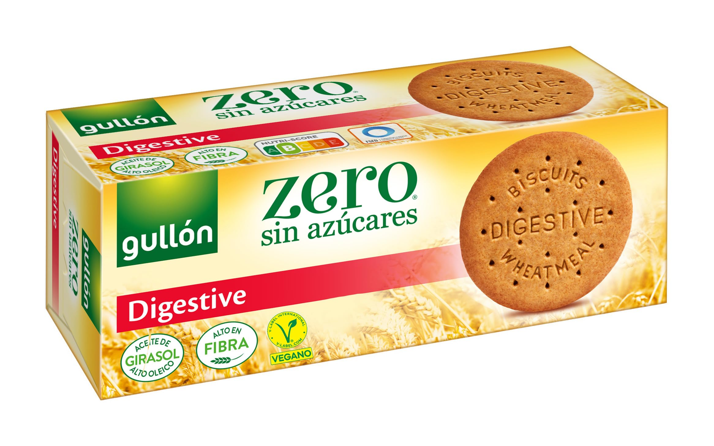
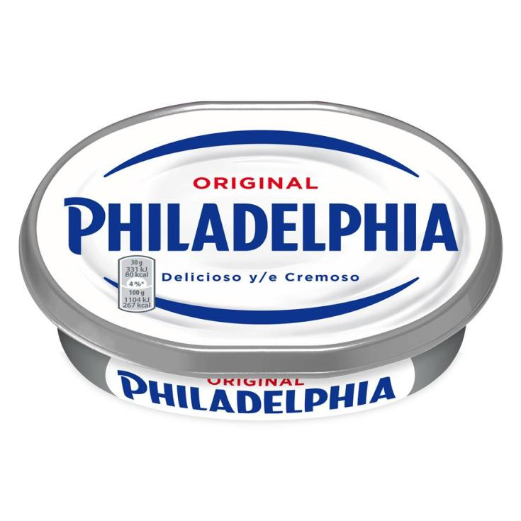
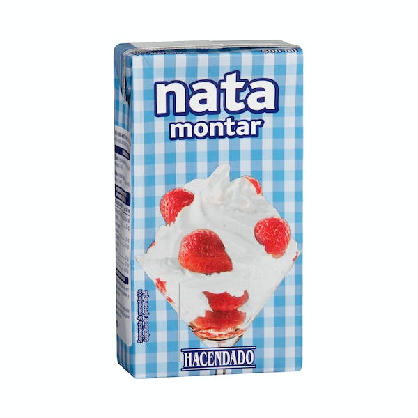
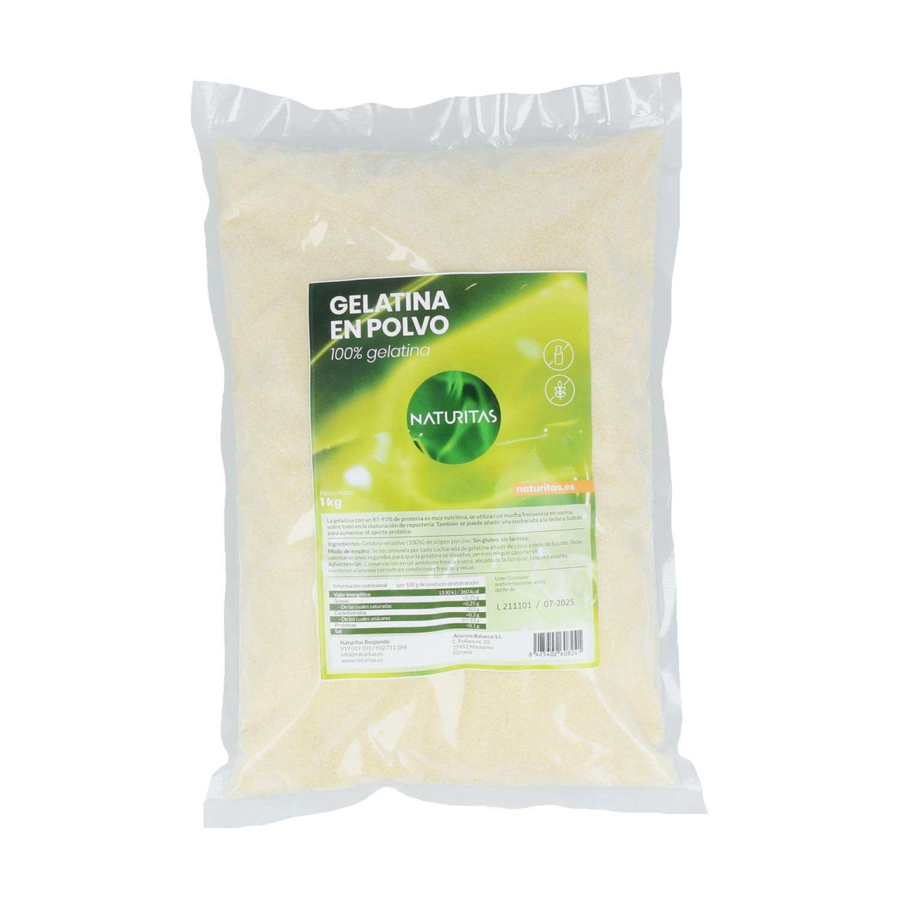
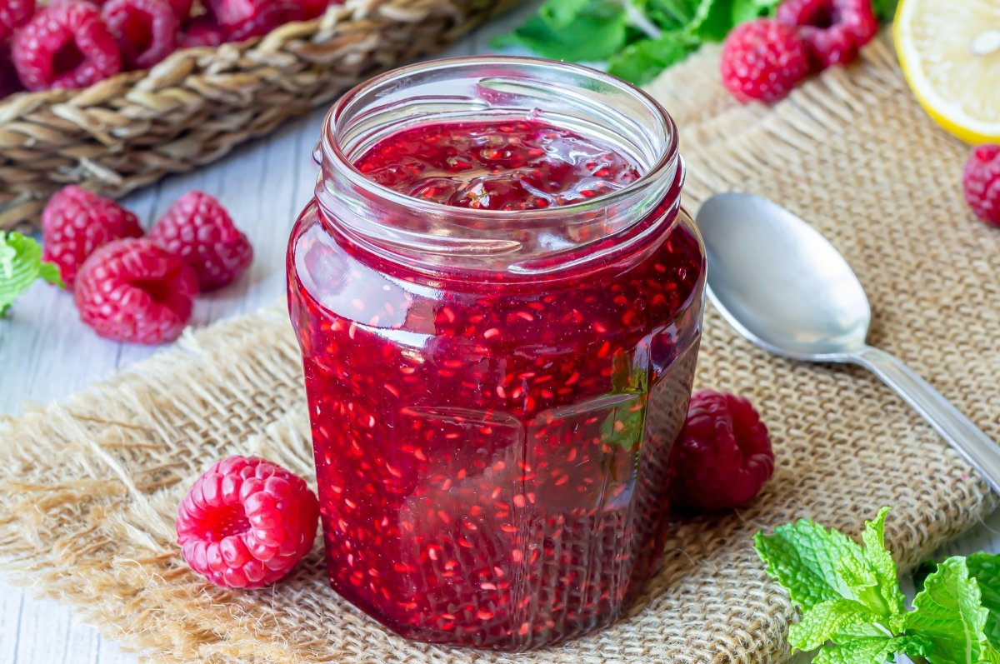
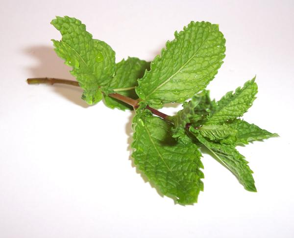

INGREDIENTES TARTA DE QUESO
- 300g Galletas tipo Digestive o María.

- 100g Mantequilla sin sal.

- 500g Queso crema tipo Philadelphia.

- 500ml Nata para montar (crema para batir o crema de leche).

- 100g Azúcar.

- 1 Cucharadita Grenetina o gelatina en polvo sin sabor (15g aprox./8 hojas de gelatina).

- 90ml Agua fría.

- 300g Mermelada de frambuesa (o del sabor que más os guste).

- Frambuesas.

- Hojitas de Menta.

Enlace a vídeo
Volver al menú